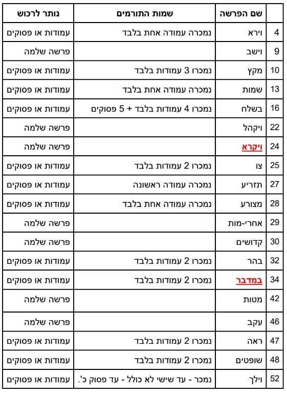

תפילות בימי חול
שחרית 0: 05:40
שחרית 1: 06:45 יום ו׳: 07:00
שחרית 2: 09:00
מנחה: 19:30
ערבית: 20:05
דף יומי: 20:15
תפילות בשבת
מנחה גדולה: 13:30
הדלקת נרות: 19:18
מנחה קטנה וקבלת שבת: 19:28
שחרית ותיקין: 06:30
שחרית: 08:15
מנחה גדולה: 13:30
דף יומי: 18:20
מנחה ודרשה: 19:20
צאת השבת: 20:13
תפילות בחג שבועות
מנחה גדולה: 13:30
הדלקת נרות: 19:18
מנחה קטנה: 19:28
ערבית (צאת הכוכבים): 20:05
תיקון ליל שבועות: 22:45
שחרית ותיקין: 05:00
שחרית: 08:15
מנחה גדולה: 13:30
דף יומי: 18:25
הדלקת נרות: 19:18
מנחה: 19:28
תיקון ליל שבועות
שיעורים שבועיים
הרב סטופל בעין אי"ה ימי ראשון בשעה 21:30
כניסה לשיעור השבועי - סיסמה: 0000000הרב סטופל במסכת יומא של ימי שלישי 20:45
כניסה לשיעור השבועי - סיסמה: 0000000הרב יהודה יוד ימי שלישי שעה 21.30
כניסה לשיעור השבועיצורבא הרב יוסי טהר ימי רביעי 20:45
כניסה לשיעור השבועי - סיסמה: 1234כתיבת ספר תורה
מחירון תרומות לספר תורה
רכישת/תרומת אות - 5 ש"ח
רכישת/תרומת מילה - 18 ש"ח
רכישת/תרומת פסוק - 180 ש"ח
2 פסוקים - 120 ש"ח כל פסוק
3 פסוקים - 90 ש"ח כל פסוק
4 פסוקים - 72 ש"ח כל פסוק
רכישת/תרומת עמודה- 613 ש"ח
רכישת/תרומת פרשה 2,520 ש"ח